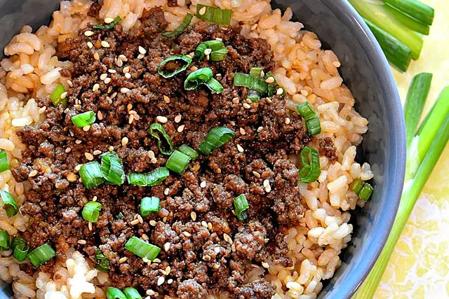

The Lasagna

Here is my recipe for Lasagna
These wonderfully satisfying dinners have two easy-to-find ingredients in common:
beef and rice. You may already have everything you need to make some of them right
in your own kitchen! Whether you're looking for something to do with ground beef,
beef tips, or steak, you'll find a crowd-pleasing new favorite in this collection
of our best beef and rice recipes.
- nonstick cooking spray
- 1 pound ground beef
- 1 yellow onion, diced
- 2 cloves garlic, minced
- 1 tablespoon taco seasoning
- Preheat the oven to 375 degrees F (190 degrees C). Spray a 9x13-inch casserole dish with cooking spray.
- Heat a large skillet over medium-high heat. Add ground beef and start to brown, then add onion, garlic, and taco seasoning. Cook until beef is no longer pink, 5 to 7 minutes. Drain and discard any excess oil. Add beans, tomatoes, spinach, chicken broth, 1 cup Mexican blend cheese, rice, and salsa. Pour into the prepared casserole dish.
- Bake in the preheated oven until rice is cooked, 45 to 50 minutes. Take out of the oven, sprinkle with remaining cheese, and bake until cheese is melted, about 10 minutes more.